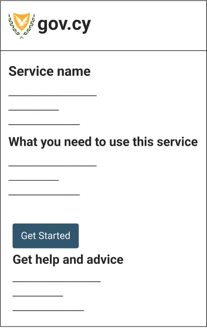

Structuring a service
This pattern explains how to structure an online service.
Depending on the service, you may apply the basic, or the break the service into tasks structure.
Basic structure
The basic structure of a service should:
- Start with an informative start page
- If needed, ask the users to sign-in
- Gather information from the users, one question at a time
- Let the users check their answers before submitting
- Show the users a confirmation of successful completion page.

Start page
Before starting the service, users should be presented with a page describing all the information they will need from the start, such as:
- What the service does
- Who it is for
- What is needed to use the service
- Other ways to apply
- How they can get help

Keep in mind that research has shown that users avoid reading long text, so keep your information minimal, and to the point and avoid using legal jargon.
This page usually resides on the GOV.CY portal.
One thing at a time
Prefer to split the questions across multiple pages with each page containing just one thing, for example:
- one piece of information you’re telling a user
- one decision they have to make
- one question they have to answer

User research will tell you when you can merge pages together. For example, if you’re designing an internal service for government users who need to repeat and switch between tasks quickly.
Keeping one thing on a page helps users to:
- understand what you’re asking them to do
- focus on the specific question and its answer
- reduce the stress of filling out humongous forms
- find their way through an unfamiliar process
- use the service on a mobile device
- recover easily from errors
It may also help to:
- save users’ answers automatically as they go
- capture analytics and statistics about each question
- handle branching questions and loops
- apply conditional logic and guide users to complete the service in a more relaxed manner
- direct the users to a specific question where they can change their answer (see check answers pattern).
Reusing entered information
If the same type of information is needed more than once, make it easier to reuse previously entered answers through one of these methods:
- pre-populating the relevant fields
- showing carried-forward responses as an option for the user to select
Check your answers page
Use the check answers pattern to let users check their answers before submitting information to a service.
Confirmation page
After the users have submitted their application, present a ==confirmation page== with a panel to tell them that they have successfully completed the transaction. This reassures the users their application has been filed and provides useful information on what will happen next.

Research has shown that users feel more at ease when:
- they are presented with a reference number for their application
- they receive a notification either by SMS or by email
- they can print or save the confirmation.
Break the service into tasks and sections structure
There may be cases where you need to implement complicated services, involving multiple tasks that users may need to complete over a number of sessions. In such cases you may consider gathering information from the users, by breaking the service into tasks.
This can be done by using the same structure and principles as the basic service structure and replacing the “Gather information” step with the following :
- Let the users decide on which task or section to work on using a ==task list page==
- Gather information from the users, one section at a time
- Repeat this process until all tasks or sections are completed
Let users complete the different sections in an asynchronous manner. Also consider saving the users’ responses and progress, and then to continue where they left off when they return.
After gathering information from the users you should still:
- Let the users check their answers from all sections before submitting
- Show the users a confirmation of successful completion page.
Task list
Use the ==task list page== pattern to help users understand the tasks involved in a completing a service. Each tasks on the task list should represent a different section to be completed by the user.
After completing all the tasks and the user clicks the ‘Continue’ button, navigate the user to the check your answers page. Make sure to validate if the user has completed all the sections, or if a special condition does not allow the users to complete the service and show appropriate ==error summary on the task list page== accordingly.
Always allow users to go back into a task to change their answer. If a user decides to go back to a previous task, make sure information they have already entered is pre-populated.
Example
Service name
Application incomplete
You’ve completed 1 of 5 sections.
| Company information with status COMPLETED | COMPLETED |
| Your contact details with status IN PROGRESS | IN PROGRESS |
| List convictions with status NOT STARTED | NOT STARTED |
| Provide financial evidence with status CANNOT START YET | CANNOT START YET |
| Give medical information with status CANNOT START YET | CANNOT START YET |
HTML code
<h1>Service name</h1>
<section>
<p class="govcy-fs-5 govcy-fw-700">Application incomplete</p>
<p>You’ve completed 1 of 5 sections.</p>
</section>
<table class="govcy-table">
<tbody>
<tr>
<td><a href="#">Company information <span class="govcy-visually-hidden"> with status COMPLETED </span></a></td>
<td class="govcy-text-end"><span class="govcy-tag">COMPLETED</span></td>
</tr>
<tr>
<td><a href="#">Your contact details <span class="govcy-visually-hidden"> with status IN PROGRESS </span></a></td>
<td class="govcy-text-end"><span class="govcy-tag govcy-tag-cyan">IN PROGRESS</span></td>
</tr>
<tr>
<td><a href="#">List convictions <span class="govcy-visually-hidden"> with status NOT STARTED </span></a></td>
<td class="govcy-text-end"><span class="govcy-tag govcy-tag-gray">NOT STARTED</span></td>
</tr>
<tr>
<td><a href="#">Provide financial evidence <span class="govcy-visually-hidden"> with status CANNOT START YET </span></a></td>
<td class="govcy-text-end"><span class="govcy-tag govcy-tag-gray">CANNOT START YET</span></td>
</tr>
<tr>
<td><a href="#">Give medical information <span class="govcy-visually-hidden"> with status CANNOT START YET </span></a></td>
<td class="govcy-text-end"><span class="govcy-tag govcy-tag-gray">CANNOT START YET</span></td>
</tr>
</tbody>
</table>
<button type="button" class="govcy-btn-primary">Continue</button>Sections
Each section represents a task the user needs to take, in order to complete a service. Break the service into independent sections of smaller and related questions.
Within each section, follow the one thing at a time principle and allow the users to answer questions one page at a time. This will also enable your service to apply conditional logic if needed.
If the section consists with more than one question, present the user with a summary list before returning to the task list page.
If the service allows users to enter multiple answers of the same time, you may implement the multiple things pattern for a section.
After completing all the questions of the section, return the user to the task list page.
Section statuses
When a user first enters a service, a section may have either a ‘Not started’ or a ‘Cannot start yet’ status.
When the user starts answering questions for section, mark the status of that section as ‘In progress’.
After answering all the section’s questions, mark the status section as ‘Completed’ and return the user to the task list page.
If the user starts answering questions on a section, but leaves without answering all of them, make sure that the status of the section is marked as ‘In progress’.
Warning
Note that a user may return to a section at any time and change an answer. In such cases your service should be smart enough to decide whether the user has completed the section and the status is ‘Completed’, or there are pending questions and the status is ‘In Progress’.
Optional sections
Depending on the service, a section may be optional for some users. In such a case you may begin your section with a radio question and depending on the users’ answer, decide if you wish to ask more questions related to that section.
For example you may ask ‘Have you donated blood before?’.
- If the user answers ‘Yes’, mark the status as ‘In progress’ and present questions related to previous blood donations.
- If the user answers ‘No’, you should mark the section as ‘Completed’ and return the user to the task list page.
Example
HTML code
<form action="" class="govcy-form" novalidate>
<fieldset class="govcy-fieldset">
<legend class="govcy-legend"><h1>Have you donated blood before?</h1></legend>
<div class="govcy-form-control">
<div class="govcy-radio">
<input class="govcy-radio-input" type="radio" name="blooddonation" id="blooddonation-yes">
<label class="govcy-label" for="blooddonation-yes">Yes, I’ve donated blood before</label>
</div>
<div class="govcy-radio">
<input class="govcy-radio-input" type="radio" name="blooddonation" id="blooddonation-no">
<label class="govcy-label" for="blooddonation-no">No, I never donated blood before</label>
</div>
</div>
</fieldset>
<button type="submit" class="govcy-btn-primary">Continue</button>
</form>Allow users to decide if the section is completed
Your service should be in a position to understand if a user has completed a section and mark it accordingly.
There are cases however, where it’s better to let the user decide when a task is completed.
This can be helpful when a section involves:
- some questions that are optional
- writing a long answer (such as in a textarea)
- looking up information, such as details about previous jobs
- answers that need to be checked carefully with someone else
Do this by asking a radio question at the end of the section — either as the last question (if the task is a single page) or on the summary list page (if the section has one).
Ask ‘Have you completed this section?’ with the radio options ‘Yes, I’ve completed this section’ or ‘No, I’ll come back to it later’.
- If the user selects ‘No’ mark the section as ‘Not started’ or ‘In progress’.
- If the user selects ‘Yes’ mark the section as ‘Completed’.
Example
HTML code
<form action="" class="govcy-form" novalidate>
<fieldset class="govcy-fieldset">
<legend class="govcy-legend">Have you completed this section?</legend>
<div class="govcy-form-control">
<div class="govcy-radio">
<input class="govcy-radio-input" type="radio" name="completed2" id="option2-yes">
<label class="govcy-label" for="option2-yes">Yes, I’ve completed this section</label>
</div>
<div class="govcy-radio">
<input class="govcy-radio-input" type="radio" name="completed2" id="option2-no">
<label class="govcy-label" for="option2-no">No, I’ll come back to it later</label>
</div>
</div>
</fieldset>
</form>Confirmation page change links
The ‘Change’ links on the confirmation page, should lead to the either the beginning of the related section, or it’s summary list page, depending on the implementation of each service.
Make sure to test your approach with the users.
Contribute
If you have used or researched this pattern, please let us have your feedback, so we can make it better for everyone. Send us an email at dsf@dits.dmrid.gov.cy to get in touch.